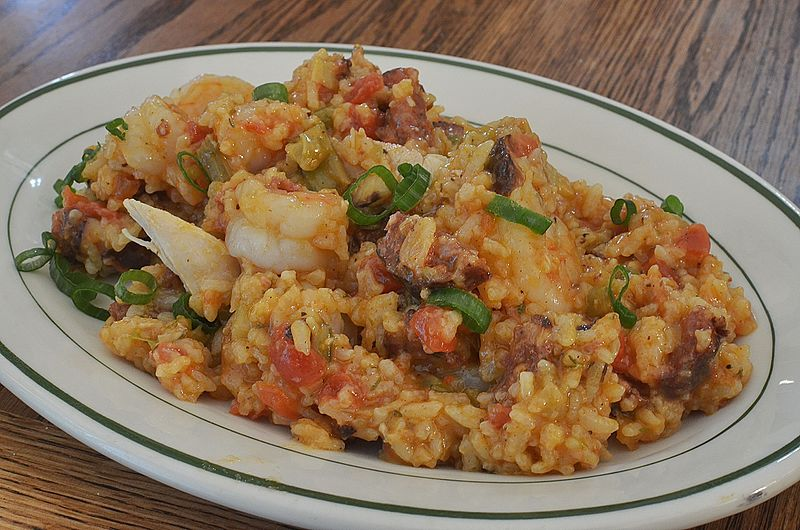

Jaemon79's Jambalaya Recipe
Chicken and Sausage Jambalaya Recipe
By jaemon79

Feast on this meow mix... Fork tender!
This authentic southern jambalaya is for the clucking chicken lovers. No shrimps allowed.
--- Spoiler Alert! ---
Put away all those pots and pans, folks. This is a one pot recipe. When the meat sweats hit, your partner (or your lonesome self) will appreciate your minimalist stack of dishes. But before we get to chow chow time, we must make the chow chow...
Ingredients (in order of use)
- 2 T vegetable oil
- 2 large sweet onions, chopped
- 1 large green pepper, chopped
- 1 cup celery, chopped
- 2 cloves garlic, minced
- 1 package Andouille sausage
- Chorizo or Polska kielbasa are fine substitutes
- 3 cups chicken broth
- 1 can (14-16 oz) canned tomatoes
- 1 lb chicken breast
- 1 bay leaf
- 1/2 tsp Tabasco green pepper sauce
- 1/2 dried thyme leaves
- 1/4 tsp ground allspice
Steps
- Add 2 T vegetable oil to dutch oven or large saute pan and warm on medium-low to medium heat
- Chop the onions, green bell pepper, and celery and add to warmed pan
- Sautee vegetables for 10 minutes or so, until onions are sweated
- Add minced garlic and sautee for 1 minute
- Cube the chicken breast into 1 by 1 inch pieces and add to pan
- Add 3 cups chicken broth
- Add canned tomatoes
- Add spices:
- 1 bay leaf
- 1/2 tsp Tabasco green pepper sauce
- 1/2 tsp dried thyme leaves
- 1/4 tsp ground allspice
- Simmer for 10-15 minutes on low to medium heat
- Add the 1 1/4 cups uncooked rice and simmer until rice is cooked
IT'S CHOW CHOW TIME!!!